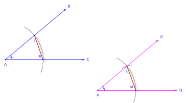

Given an angle formed by two lines with a common vertex, this page shows how to construct another angle from it that has the same angle measure using a compass and straightedge or ruler. It works by creating two congruent triangles. A proof is shown below.
The above animation is available as a printable step-by-step instruction sheet, which can be used for making handouts or when a computer is not available.
This construction works by creating two congruent triangles. The angle to be copied has the same measure in both triangles
The image below is the final drawing above with the red items added.

| Argument | Reason | |
|---|---|---|
| 1 | Line segments AK, PM are congruent | Both drawn with the same compass width. |
| 2 | Line segments AJ, PL are congruent | Both drawn with the same compass width. |
| 3 | Line segments JK, LM are congruent | Both drawn with the same compass width. |
| 4 | Triangles ∆AJK and ∆PLM are congruent | Three sides congruent (SSS). |
| 5 | Angles BAC, RPQ are congruent. | CPCTC. Corresponding parts of congruent triangles are congruent |